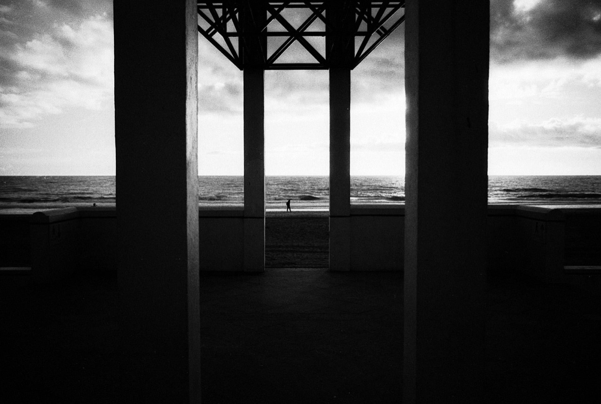

黑白胶卷鄙视链：原厂党、平替党、参数党，你站哪队？
先撂一句得罪人的：黑白胶卷圈，是全世界最爱互相看不上的圈子。
你不过是买个胶卷，怎么还整出三六九等了？今天不聊玄学，只拿数据，把这条鄙视链从头捋到尾。看完你再决定站哪队——反正我谁也不帮，我帮你的钱包。

一、原厂党 vs 平替党：多花 40 块，你买的是 logo 还是心安？
伊尔福 HP5 Plus：伊尔福的旗舰全能卷，约 ¥70–90。宽容度大、颗粒柔和、影调丰富，还能从容迫冲。
Adox CHM 400：约 ¥50–70，德系 ORWO 高速卷——它被人叫「平民版 HP5+」。有多像？所有针对 HP5+ 的冲洗时间，都能直接套用。

但原厂党先别关页面。CHM 400 的片基是灰紫色的，跟 HP5+ 不一样；还有用户反馈，用 Rodinal 1+25 冲出来反差非常低，放大时得换更高号数的相纸滤镜。
说白了——省下的这 20 到 40 块，你是买一个「绝对省心」，还是多买一卷胶卷带出门？这题没有标准答案，只有你的银行卡有答案。
二、柯达党 vs 伊尔福党：吵了四十年的老架
柯达 Tri-X 400：约 ¥85–105。黑白界最经典的万能卷，宽容度极大、颗粒扎实、反差温暖，被称作「黑泽明都爱用的稳卷」。
伊尔福 HP5 Plus：约 ¥70–90。宽容度大、颗粒柔和、影调丰富。
两个都能拍街头、纪实、人像，两个都能迫冲。区别在哪？颗粒的性格不一样——一个「扎实」，一个「柔和」。
所以这场架吵了四十年也没结果：它根本不是对错之争，是口味之争。你让爱吃辣的和爱吃甜的打一架，能打出结果吗？

三、参数党 vs 玄学党：数据好看 ≠ 拍出来好看
参数党最爱端出这两卷：
Adox Silvermax 100：ISO 100，高银量、高锐度、极细腻，被不少用户称作「六边形战士」，甚至有人拿它跟 Tri-X 400 相提并论。但有个坑：高光环境下曝光控制不好容易过曝，老手会干脆按 ISO 200 来拍。
Adox CMS 20 II：ISO 20（没打错，就是二十）。几乎零颗粒，有用户实测它在 135 画幅下的细节，能超过 4×5 画幅的 Fomapan 100。
玄学党看到这儿先别急着「哦——」。CMS 20 II 的另一面是：反差极高、宽容度极窄，还得配专用显影液，圈里普遍把它归到「专家级、不适合日常」。
所以记住这句话：参数是给测评看的，味道才是给你看的。
和事佬专区：如果你只想安稳拍完一卷
Rollei RPX 400，约 ¥45–60。影调柔和、反差中等偏低，宽容度极佳，被形容成「很难拍烂」，特别适合估光拍。
翻译成人话：手抖、曝光不准、赶时间，它都能救你。

说句掏心窝的
看到这儿，我猜你心里那句话是：「我又不是什么大师，我就想拍点能发出去的照片，怎么挑个胶卷这么累？」
对，这才是重点——这条鄙视链，本来是别人拿来互相较劲的，不是拿来给你挑胶卷的。
罗伯特·卡帕说过：「如果你拍得不够好，是因为你离得不够近。」 他没说「是因为你的胶卷不够贵」。
胶卷决定灰度，你决定内容。
想查哪卷值不值？
上面每一卷——39 卷黑白胶卷的规格、颗粒、适用场景、参考价格，还有实拍样片和摄影师的使用感受，都在档案库里。
查这些卷的详情
HP5 Plus CHM 400 Tri-X 400 Silvermax 100 CMS 20 II RPX 400
去胶卷库看看这几卷
「胶卷档案」是一个可搜索的胶卷资料库：每卷都有规格、特性、使用感受、参考价与实拍样片。搜品牌或型号就能直达。